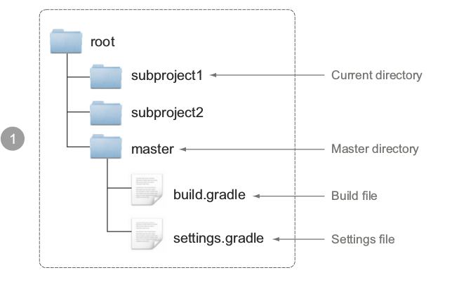
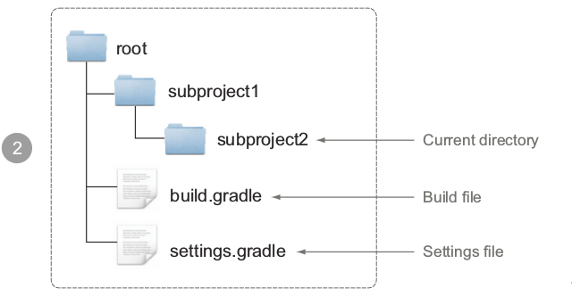

多项目打包
上一节你给你的项目定义了一个层次化的目录结构，整个项目包含一个根目录和每个模块一个子目录，这一节你将学习怎么用Gradle来构建这样一个项目结构。
首先在你的根目录新建一个build.gradle文件，创建一个空的build脚本然后运行gradle projects:
$ gradle projects
:projects
------------------------------------------------------------
Root project
------------------------------------------------------------
Root project 'todo'
No sub-projects
接下来学习怎么通过settings.gradle来定义项目的子项目。

介绍设置文件
设置文件用来表示项目的层次结构，默认的设置文件名称是settings.gradle,对于你想添加的每一个子项目，调用include方法来添加。
//参数是项目路径，不是文件路径
include 'model'
include 'repository', 'web'
提供的项目路径是相对于根目录，记住冒号：是用来分隔目录层次，比如你想表示model/todo/items这个目录，在gradle里面是model:todo:items这样表示。接下来执行gradle projects任务：
$ gradle projects
:projects
------------------------------------------------------------
Root project
------------------------------------------------------------
Root project 'todo'
+--- Project ':model'
+--- Project ':repository'
+--- Project ':web'
通过添加当个设置文件，你就创建了一个多项目的构建包含一个根项目和三个子项目，不需要额外的配置。
理解settings 的API表示
在Gradle开始执行构建之前，它创建一个Settings类型的实例，Settings接口直接用来表示settings文件，主要目的是通过代码来动态添加项目参与到多项目构建中，下图是你可以访问的Gradle API。

之前我们介绍过Gradle有三个生命周期，实例化阶段->配置阶段->执行阶段，Settings处于实例化阶段，Gradle自动找出一个子项目是否处在一个多项目构建中。

设置文件解析
Gradle允许你从根目录或者任何子目录中运行构建任务，只要它包含一个build脚本，Gradle怎么知道一个子项目是不是一个多项目构建的一部分呢？他需要查找settings文件，Gradle通过两步来查找设置文件。
- Gradle查找和当前目录具有相同嵌套级别的master目录下的设置文件
- 如果第一步没有找到设置文件，Gradle从当前目录开始逐步查找父目录
如果找到了settings文件，项目包含在另一个项目中，这个项目就当成是多项目构建的一部分。整个过程如下所示：
 